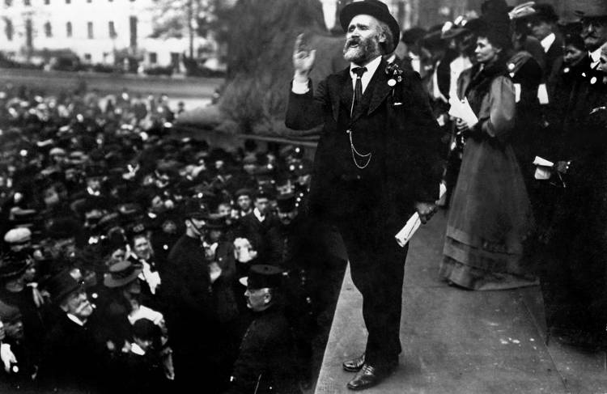

- 1856 Born Lanarkshire, Scotland on 15 August 1856, the illegitimate son of a domestic servant
- 1866 Aged 10, he went to work down the mines earning a shilling a day where he worked for 16 years. Mine safety was very poor and miners were often killed and injured. However his mother spent evenings teaching him to read and write.
- 1872 Aged 16 he took the pledge to abstain from alcohol, following the Temperance Movement's advocacy of self-help and self-discipline, thrift and hard work. In a series of editorials in the Miner, a magazine he set up, he declared his new vision: “We need a Labour Party, pure and simple.”
- 1892 Elected MP for West Ham South, London
- 1899 A Trades Union Congress meeting was called to bring together all left-wing organisations and form into a single body that would sponsor Parliamentary candidates. After the debate, 129 delegates passed Hardie's motion to establish "a distinct Labour group in Parliament, who shall have their own whips, and agree upon their policy, which must embrace a readiness to cooperate with any party which for the time being may be engaged in promoting legislation in the direct interests of labour." This created an association called the Labour Representation Committee (LRC), meant to coordinate attempts to support MPs sponsored by trade unions and represent the working-class population.
- 1900 Hardie elected MP to Merthyr Tydfil and was one of only two Labour MPs in parliament. Calling himself the “member for the unemployed” he declared that the State had a responsibility to provide work for the maintenance of the unemployed and assistance in finding employment. "What have the unemployed to thank Her Majesty for in this Speech." On the occasion of the Royal marriage, he called attention to the fact that a woman at Edmonton on that day had died of starvation, and he shocked the House by calling attention to the fact that she, too, was a human being.
- 1906 After the General Election dubbed the 'Liberal landslide', the name "The Labour Party" was adopted.Hardie, was elected as Chairman of the Parliamentary Labour Party. However the parliamentary party was divided. Whilst Hardie was a committed believer in votes for women, for many others the issue of votes for women was a complete distraction. Workers were starving, unemployment was rampant and union rights under threat. Moreover only a third of men had the vote.
- 1907-08 Hardie’s health declines, doctors prescribed an eight month sea voyage with plenty of rest and relaxation. Hardie remained the nominal leader of the party, but he was literally all at sea, on a free Labour-party-funded cruise from May 1907 to the end of his term as leader in January 1908. 
- 1915 In February he gave what would be his final speech where he attacked the practice of substituting farm and factory men joining the army for WWI, with children instead of having them go to school. In September following from a series of strokes, James Keir Hardie died in a Glaswegian hospital, and as a result of his outspoken attacks on the establishment the rich and his WWI anti-war stance, he was was declared by some as “one of the best hated men of his time”. Moreover the meagre salary of only four pounds a week as a public servant had left his family virtually penniless and his funeral was paid for by the the Independent Labour Party.
Though hundreds of mourners attended his funeral in Glasgow, not one single word of tribute was paid to him in the Commons. - LegacyHardie died penniless, ignored, despised and one might infer that he felt he had utterly failed. Yet within 10 years, Labour would be in power. And within 30 years the new post WWII Labour Government would create the welfare state, the National Health Service and a democratic socialist Britain inspired by Hardie.
100 years after his death the work of James Keir Hardie reverberates and touches the lives of all citizens of the UK to this day. That is the legacy of the peoples hero, the first working class democratic socialist MP - click here for more information